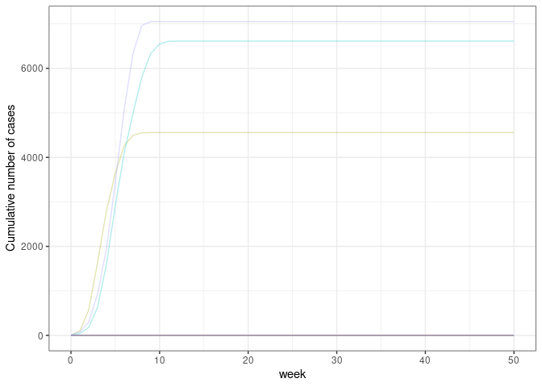

ringbp is an R package that provides methods to simulate infectious disease transmission in the presence of contact tracing. It was initially developed to support a paper written in early 2020 to assess the feasibility of controlling COVID-19. For more details on the methods implemented here, see the associated paper.
Installation
The current development version of ringbp can be installed from GitHub using the pak package.
if(!require("pak")) install.packages("pak")
pak::pak("epiforecasts/ringbp")Quick start
The main functionality of the package is in the scenario_sim() function. Here is an example for running 10 simulations of a given scenario:
library("ringbp")
library("ggplot2")
res <- scenario_sim(
n.sim = 10, ## 10 simulations
num.initial.cases = 1, ## one initial case in each of the simulations
prop.asym = 0, ## no asymptomatic infections
prop.ascertain = 0.2, ## 20% probability of ascertainment by contact tracing
cap_cases = 4500, ## don't simulate beyond 4500 infections
cap_max_days = 350, ## don't simulate beyond 350 days
r0isolated = 0.5, ## isolated individuals have R0 of 0.5
r0community = 2.5, ## non-isolated individuals have R0 of 2.5
disp.com = 0.16, ## dispersion parameter in the community
disp.iso = 1, ## dispersion parameter of those isolated
onset_to_isolation = \(x) stats::rweibull(n = x, shape = 1.651524, scale = 4.287786), ## time from onset to isolation
incubation_period = \(x) stats::rweibull(n = x, shape = 2.322737, scale = 6.492272), ## incubation period
k = 0, ## skew of generation interval to be beyond onset of symptoms
quarantine = FALSE ## whether quarantine is in effect
)Plot of weekly cases
ggplot(
data = res, aes(x = week, y = cumulative, col = as.factor(sim))
) +
geom_line(show.legend = FALSE, alpha = 0.3) +
scale_y_continuous(name = "Cumulative number of cases") +
theme_bw()
Estimate extinction probability
extinct_prob(res, cap_cases = 4500)
#> [1] 0.8Contributors
All contributions to this project are gratefully acknowledged using the allcontributors package following the all-contributors specification. Contributions of any kind are welcome!
Code
seabbs, sbfnk, jhellewell14, timcdlucas, amygimma, joshwlambert, Bisaloo, actions-user